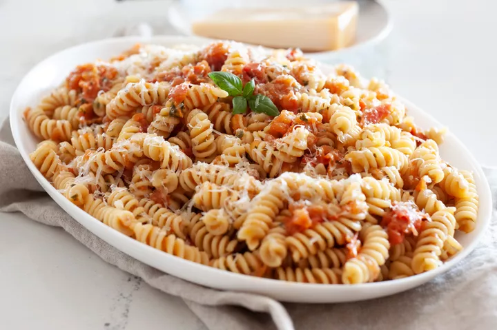

Smashed Tomato Pasta

-
Preparation Info
-
Prep: 10 mins
-
Cook: 60 mins
-
Total: 70 mins
-
Servings: 4
Ingredients
-
2½ pounds of tomatoes
-
1½ teaspoons kosher salt, plus more for salting the pasta water
-
¼ cup homemade or store-bought basil pesto, plus more to taste
-
1 pound dry fusilli pasta
-
⅓ cup freshly grated Parmesan cheese, to pass around at the table
Steps
-
Preheat the oven to 350 degrees F.
-
Roast the tomatoes.
-
Cook the pasta.
-
Smash the tomatoes and toss with pasta.
Return to top
Return to mainpage